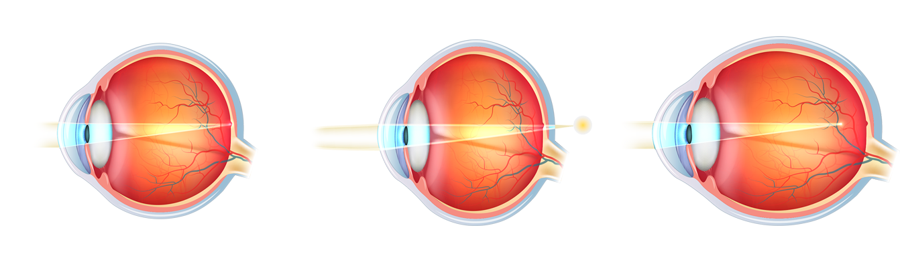
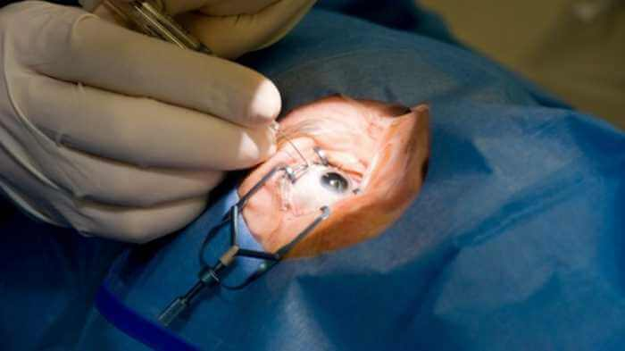

ŽINIOS . MEDICINA
Lazerinio regėjimo korekcija nebereikalinga

Remiantis statistika, kas trečias europietis turi regėjimo problemų. Remiantis 2017 m. nuomonės apklausa, dauguma jų nesipriešina visam laikui atsisakyti kontaktinių lęšių ir akinių, bet be operacijos. Šiandien šį norą tapo įmanoma įgyvendinti!
normalus regėjimas
trumparegystė
toliaregystė
Akių operacija: kokios yra pasekmės
Lazerinio regėjimo korekcija greitai praranda pagreitį. Nepriklausomas oftalmologijos srities ekspertas Adrianas Feraru šią situaciją paaiškina padažnėjusiais atvejais, kai regėjimo atkūrimo operacijos baigėsi neigiamai.
Kokybiška korekcija kainuoja daug pinigų, dešimt ar net penkiolika kartų didesnė už lietuvių pragyvenimo lygį. Ieškodami alternatyvių gydymo būdų, žmonės ieško biudžetinių variantų, kuriais tampa labiau prieinamos klinikos su pasenusia įranga.
PSO statistika praneša, kad maždaug 45 milijonai Lietuvos gyventojų turi regėjimo problemų. Ir tik 11 proc. jų gali sau leisti brangų gydymą, kuriam priklauso lazerinė korekcija.
Į mane kreipiasi pacientai, praradę regėjimą 5-7 vienetais po operacijos. Deja, tokiais atvejais jau nebeįmanoma atkurti gamtinio regėjimo. Iki gyvenimo pabaigos šie žmonės bus priversti nešioti akinius su didžiuliais lęšiais.
 Regėjimo atkūrimo operacija ne visada baigiasi sėkmingai
Liaudiški būdai atkurti regėjimą
Yra daug liaudiškų regėjimo atkūrimo būdų. Jiems priklauso akių mankšta, didelio vaisių ir daržovių, turinčių daug vitaminų A, B1, B2, B12, C ir kt., kiekio vartojimas.
Nepaisant paplitusios nuomonės, tokiu būdu neįmanoma sugrąžinti regėjimo aštrumo akims. Priežastis yra ta, kad norint gauti reikiamą vitaminų procentą iš maisto, per vieną priėmimą reikia suvalgyti tokį kiekį šviežio produkto, kurio žmogaus skrandis tiesiog negali tilpti.
Pavyzdžiui, 10 kilogramų morkų arba 15 kg mėlynių kasdien. Be to, ne kiekvienas vitaminas pasisavinamas, nes vartojant kiekvieną elementą, yra keletas savybių, kurių reikią laikytis.
Pavyzdžiui, riboforiną (vitaminą A) blogai pasisavina rūkantys ir alkoholį vartojantys asmenys, bei esant sumažėjusiai vitamino E ir cinko kiekio kraujyje normai. Tačiau net ir sveikai gyvenantiems žmonėms vitaminas A pasisavinamas tik jį vartojant kartu su pakankamu riebalų kiekiu.
Paprastai savarankiškas grynų vitaminų iš vaistinės vartojimas sukelia priešingą efektą ir sukelia hipovitaminozę, dėl kurios sumažėja regėjimas.
 Iš maisto gauti pakankamą vitamin kiekį regėjimui yra
beveik
neįmanoma
Iš maisto gauti pakankamą vitamin kiekį regėjimui yra
beveik
neįmanoma
Šiuolaikiniai akių atstatymo būdai
Pirmaujantys Europos oftalmologai sukūrė vaistą, kuris artimiausiu metu išstums lazerinę korekciją. Europos rinkoje vaistas užregistruotas su prekės ženklu .
Per vienerius metus jis jau leido daugiau nei 100 tūkstančių žmonių nuimti akinius ir visam laikui atsisakyti lęšių. Mokslininkai jo plėtrai praleido daugiau nei 7 metus. Dar 4 metai buvo skirti klinikiniams eksperimentams atlikti.
Didelis priemonės veiksmingumas atsiranda dėl analogų neturinčios sudėties, į kurią įeina ginkmedžio, mėlynių, jonažolės ir martinijos ekstraktai.
Svarbų vaidmenį kuriant kapsules suvaidino šalto vandens ekstrahavimo metodas , kuris leido visiškai išsaugoti biocheminę vitaminų sudėtį.
Preparato veikliosios medžiagos per 2-4 savaites sugeba padidinti regėjimui reikalingų vitaminų kiekį iki sveiko žymės. Per tą laiką išlyginamas už regėjimo aštrumą atsakingų mikroelementų pusiausvyra.
Tai lemia natūralų akių slėgio stabilizavimąsi bei tonizuoja akių raumenis, stiprina tinklainę ir išlygina regėjimą iki vieneto.
13 skaitytojų komentarų
Dukra reguliariai naudojasi. Ji labai patenkinta. Lęšiai dabar jau praeityje...
Vakar paėmiau siuntinį su . Pristato greitai, viskas gerai. Jau pradedu bandyti.
Užsiimu savo nesveikomis akimis, jau antrą savaitę vartoju . Taigi mano regėjimas TIKRAI gerėja! Aš taip džiaugiuosi!
Aš užsakiau, dabar laukte laukiu siuntinio :)
Jau savaitę vartoju ir mano regėjimas pagerėjo nuo -4 iki -2! Labai ačiū!!!!
Per mėnesį atlikau kursą su , ir regėjimas tapo 1! Tiesiog neturiu žodžių!
Naudojuosi jau savaitę ir jau turiu rezultatų. Regėjimas labai pagerėjo! Stengiuosi nenešti akinių.
Man pavyko šiuo vaistu pagerinti regėjimą nuo -5 -2 iki -2 per 4 savaites. Bet aš noriu vienetuko)). Tiesa, kartais tinginiuoju ir praleidžiu ar pamirštu suvalgyti tabletę. Vis tiek reikia paimti valią į kumštį ir baigti tai, ką pradėjau
Aš esu tokia pati, visada pamirštu išgerti tabletę. Bet net nepaisant to, dėl regėjimas pagerėjo. Buvo +1,5, dabar 0,8.
Pasveikinkit mane, aš visiškai atstačiau savo regėjimą! Net pati tuo netikiu! Vakar salone patikriniau akinius, regėjimas yra VIENETAS! Vyras taip pat pradėjo vartoti , nors jis neturi tokio prasto regėjimo kaip mano.
Liaudi, tikiuosi, turėsite tokią pačią laimę kaip aš. Atgavau regėjimą per 12 dienų nuo -2 iki 0,8. Ačiū vaisto kūrėjui. Sėkmės visiems!
Teta vartojo , ką tik atliko kursą. Regėjimas nuo -3,5 pakilo iki 1. Net neturiu žodžių, kiek visa šeima džiaugiasi ja.
Vaistas yra superiškas, o svarbiausia - paprasta ir greitai. Už straipsnį - 5+++;) Vakar lankiausi pas optometristą - jis buvo sukrėstas rezultatų.
Dėkui už straipsnį. Kaip visada, labai naudinga. Eisiu užsisakyti.